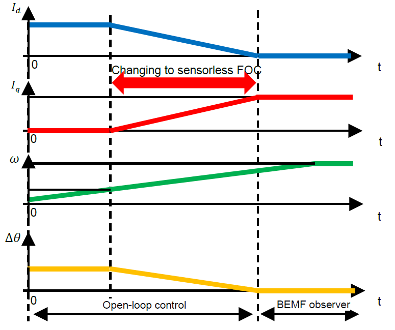
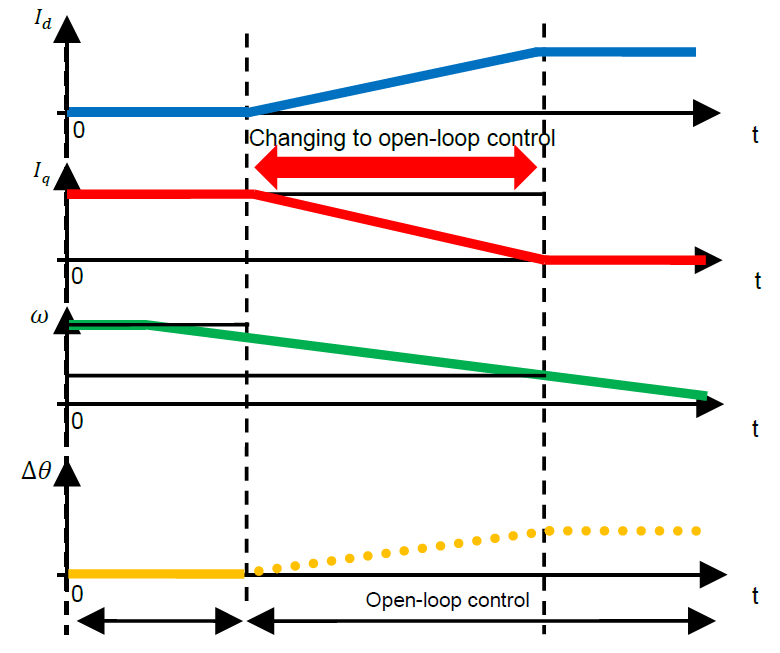

In the low-speed range, current-drawn control is performed by supplying a positive-direction current through the d axis to cause forced excitation. As this is open-loop control, the applicable loads are only several tens of percent of the rated load. To apply the rated load, drive the motor in the later-described mode of sensorless vector control (current feedback control) with the use of the BEMF observer in the medium-to-high-speed range.
After the motor is started, control is switched to the sensorless method (closed-loop speed control) when the speed has reached a high enough level for estimation of the inductive voltage. Note that hunting of the current and speed may occur due to a phase error when control is switched from the open-loop method to the sensorless method. Therefore, the load torque is estimated from the phase error \(\Delta\theta\) and the processing for switching to sensorless control proceeds as shown in Table 1. When the sensorless control algorithm switches from the low-speed range to the medium-to-high-speed range, the state sequence is made to operate so that current fluctuations are reduced by adjusting the d-axis and q-axis current commands. On the other hand, when the speed at which the sensorless control algorithm switches from the medium-to-high-speed range to the low-speed range has been reached, operation is switched to open-loop control. The speeds for switching control during acceleration and deceleration need to be sufficiently separated so that switching does not occur frequently. These speeds can be adjusted by using parameters described later. Hunting of the current and speed at the time of switching of control can thus be reduced.
Table 1 Behavior of Physical Quantities in the Switching of Sensorless Control during Acceleration and Deceleration
 |
 |
|---|---|
| Acceleration | Deceleration |
In the medium-to-high-speed range, the motor is controlled by sensorless vector control algorithm.
See BEMF observer or AFO document.